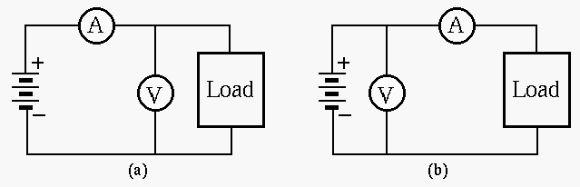
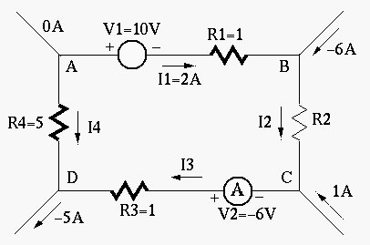
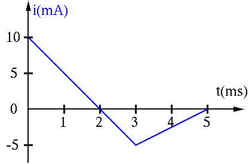

(b) Replace one of the two bulbs by another bulb labeled as 110V 15W, and find the power consumption of each of the bulbs. What will happen to each of the two bulbs? (Note that when the power consumption by a bulb is larger than the specified wattage, it will be burned out!)


(Note: The direction of a current and the polarity of a voltage source can be assumedarbitrarily. To determined the actual direction and polarity, the sign of the values also should be considered. For example, a current labeled in left-to-right direction with a negative value is actually flowing right-to-left.)
A current flowing in an initially uncharged 1-F capacitor is shown in the figure as a function of time. Find and plot the voltage across the capacitor produced by this current.
